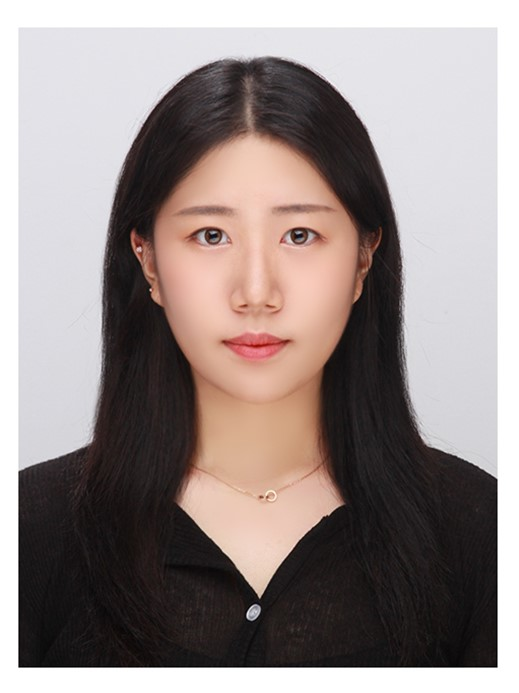

자기소개

저는 현재 경성대학교 소프트웨어학과에 진학중이며, IT관련 분야에 관심을 갖고 있는 신지수입니다.
저는 코딩을 처음 접했을때, 굉장히 어려워했습니다. 하지만, 차근차근 익혀나갈수록 코딩에 대한 흥미를 느낄 수 있었습니다. 저의 꼼꼼한 성격탓에 남들보다 조금더 시간이 걸릴 수 있습니다. 따라서 처음에는 버벅거릴 수도 있지만, 포기하지 않고 항상 할 수 있다라는 생각을 하며 도전하는 것을 두려워하지 않습니다.
저의 작은 비전으로, 저는 IT서비스에서의 불편한 점을 개선해서 IT서비스 사용자들의 소중한 시간을 조금이라도 단축시켜주고 싶습니다. 항상 어떤 환경에서도 최선을 다하고 즐기는 마음으로 열심히 일하고자 합니다.